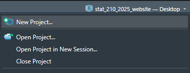
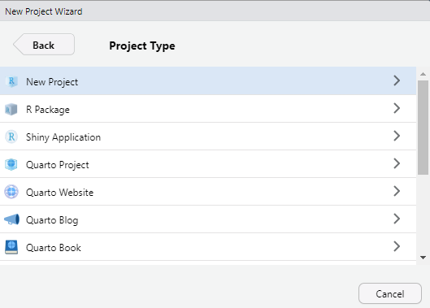
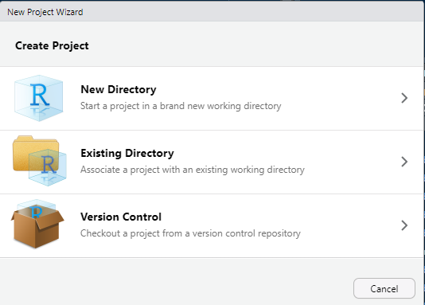
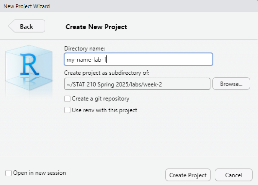

# Load a dataset into the R Environment.
data(ToothGrowth)
# Look at the summary of the variables in the dataset.
summary(ToothGrowth)Lab 1: Introduction to Quarto
1 Part One: Workflow for Lab Setup
1.1 Step 1: Make a New Project in RStudio
Either under File, or in the top right corner where the current project name is, select
 ## Step 2: Choose New Project For now, we are simply creating a New R Project. This will generate a .Rproj file and folder of the same name to store all of our content and set our working directory.

1.2 Step 3: Choose a New Directory
For this week, you will create a New Directory. Once we start using GitHub and Git, we may choose Version Control as our option.

1.3 Step 4: Choose the File Name and Location
Now set up your file name (for the folder and .Rproj file) and the best subdirectory for your Lab 1. This should be a nested folder within your “STAT 210” Folder on your hard drive (Documents), with the “lab” sub-folder, and “week-2” sub-sub-folder.
Use the file format your-name-lab-1

1.4 Step 6: Download the lab-1-student.qmd
Now download the lab file into your new project folder on your computer. Rename the file so that it reads lab-1-your-name.qmd with your first and last name.
You can download it here: Lab 1
The file should appear in your project folder under your Files tab in the lower right pane. Click it to open it up. Now that you are all set up, go ahead and get started with the rest of the lab!
2 Part Two: Exploring Quarto Documents
2.1 Specifying Global Execute Options
Execution options specify how the R code in your Quarto document should be displayed. This guide provides descriptions on the options you can specify in a document’s execution.
To start, your YAML should look something like this:
---
title: "Lab 1: Introduction to Quarto"
author: "Your name goes here!"
date: "Insert the date here!"
format: html
self-contained: true
editor: source
---Question 1 – Add your name and the date to the YAML.
Question 2 – Add an execute line to your YAML that includes the following options, (1) your source code is always output on the page, and (2) your document will render even if there are errors.
2.2 Running the Provided Code
Next, click on the “Play” button on the right of the first auto-populated code chunk. Alternatively, you can highlight (or simply put your cursor on the line of) the code you want to run and hit ctrl + Enter (for PCs) or ⌘ + Enter (for Macs).
You should see the code appear in the console, as well as the result of the code (2). Keep in mind the [1] before the 2 is vector notation. This means the result is a vector of length 1, whose first element is 2.
Question 3 – Let’s spice this code up a bit. Delete 1 + 1 from the code chunk and paste in the following code:
Now run this code. You should see a six-number summary of the variables len and dose included in the ToothGrowth dataset, as well as the frequency of the levels contained in the supp variable. Further, if you inspect the Environment tab, the ToothGrowth dataset should appear. You can click on the dataset name (not the blue play button!) to look at the data.
Check the Data Documentation
Question 4 – In your console (not in the Quarto document), type ?ToothGrowth (or alternatively help(ToothGrowth)). Use the information that pops up in the Help pane in RStudio to fill in the blanks below.
This dataset investigates the effect of __________ on tooth growth in _________________.
The two supplement delivery methods include OJ (______________) and VC (_______________).
ToothGrowth is a data frame with ____ observations and ____ variables.
Question 5 – Before the code chunk, change the “Running the Provided Code” section header to a header that better describes the contents of this section (e.g., Tooth Growth Dataset).
2.3 Creating a Plot
Your second code chunk is just as boring as your first, so let’s spice it up!
Question 6 – Replace the plot(pressure) code with the following (we will talk about graphics next week!):
library(tidyverse)
ggplot(data = ToothGrowth,
mapping = aes(x = supp, y = len)) +
geom_boxplot() +
labs(x = "Supplement", y = "Length of Teeth (mm)")
ToothGrowth %>%
mutate(dose = as.factor(dose)) %>%
ggplot(mapping = aes(x = dose, y = len)) +
geom_boxplot() +
labs(x = "Dose of Supplement (mg/day)", y = "Length of Teeth (mm)")Now, run this code chunk! You should see two side-by-side boxplots, one plot comparing tooth length between the two supplement delivery methods and one plot comparing tooth length between the three different dosages uses.
Question 7 – Read over the Quarto documentation on figure options and add an option (#|) to the above code chunk to make the figures print side-by-side (i.e., in one row) in the rendered HTML file.
Question 8 – Specify in the code chunk options that these boxplots should be center aligned.
Question 9 – Specify a figure caption for the boxplots (using a code-chunk option).
2.4 Inserting a New Code Chunk
Navigate to the last sentence of your the Quarto document. We’re now going to insert a new R code chunk at the bottom of the document.
There are four different ways to do this:
Type ctrl + alt + i (on a PC) or ⌘ + ⌥ + i (on a Mac).
Click on the symbol. This should automatically default to R code, but if you have a Python compiler on your computer, you might need to select “R” from the options.
If you are using the Visual editor, click on the “Insert” button, then select “Code Chunk”, and finally select “R”.
Manually add the code chunk by typing
```{r}. Make sure to close your code chunk with```.
2.5 Creating a More Complex Plot
In this section, we are to create a new plot that you will place in the created code chunk.
ToothGrowth %>%
mutate(dose = as.factor(dose)) %>%
ggplot(mapping = aes(x = dose, y = len, fill = supp)) +
geom_boxplot() +
labs(x = "Dose of Supplement (mg/day)",
y = "Length of Teeth (mm)",
fill = "Supplement Type")Carry out the following steps:
Question 10 – In the new code chunk, add the code for the graph. Be sure to include a code chunk label.
Question 11 – Run your code chunk to obtain the output for your new graph.
Question 12 – Create a numbered list containing:
- Your conclusions (in the context of these data) based on the graph.
- A recommendation for how I should get my guinea pig’s teeth (odontoblasts) to grow more.
Question 13 – Create another section header, describing the contents of this section before the graph and list.
2.6 Render Your Document
Render your document as an html file. Use the “Render” button (the blue arrow!) at the top of your screen.
If you run into trouble rendering your document, try restarting R and running your code chunks in order, and see if you can find the problem.
Another common issue is deleting the tick marks (```) that surround your code chunks. If you notice that the code chunks are not showing a “Play” button (), or that they are not highlighted in gray, double check your tick marks!
Recall we included error: true in our YAML execution options. This means that your document will still render even if there are errors. Make sure you are double checking your work!
You will notice that there is auto-generated text that is unrelated to the work that you completed. It is always a good idea to delete this extra text!
3 Challenge 1: Styling your Quarto Document
Remember that Challenge sections are optional, but they are good for your learning - especially if you are already a proficient R coder!
You can find a list of every option you can use to format an HTML document here and here. Further, here are lists of different themes you can specify in your YAML to produce differently styled outputs.
Make the following changes to your document:
Specify “code-folding” in your YAML document options.
Add a table of contents to your document.
Add a color theme to your document.
3.1 Render again!
Notice that when you render the document, all of the code reruns again, producing the same output as before, but with your changes—this is called reproducibility!
You should render often while completing your practice activities and lab assignments. Make small changes, then make sure the file still renders rather than making a bunch of big changes and then realizing something is wrong.
3.2 Turn it in!
Open the .html file on your computer to make sure it looks as you expected. Then upload the rendered (.html extension) document to Canvas and the zipped project file as two separate uploads.!
You’ll be doing this same process for all your future Lab Assignments but after next week you will submit a GitHub link instead of the rendered document. Each of these will involve a Quarto file. Some weeks, I may have a template for you to copy like you had here, while other weeks you will generate your own Quarto file from scratch.